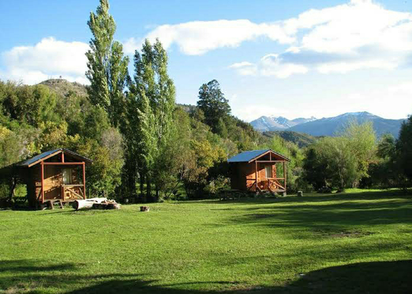
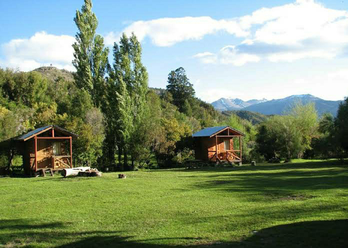

CONTACTO
Podés comunicarte con Cabañas Maki para hacer consultas, efectuar tu reserva o coordinar tu llegada a través de los siguientes medios:


En el corazón del Bolsón, rodeado de naturaleza
a orillas del río Los Repollos, se encuentra nuestro complejo de ecoturismo con cabañas, dormis, parcelas para acampar, servicio de proveeduría, parrillas, baños, duchas de agua caliente y zonas de recreación.
Un predio de 4 hectáreas poblado de árboles nativos con vertientes naturales y fauna autóctona, ideal para realizar actividades recreativas y disfrutar de la paz del lugar.
Contamos con varias opciones de hospedaje desde cabañas para 4 ó 6 personas con servicio de desayuno,
cocina y baño, dormis para 3 ó 4 personas y zona de parcelas para carpas y casas rodantes con servicio de baños con agua caliente, quincho y proveeduría.
 

A 16 km del Bolsón y 80 de Bariloche, sobre Ruta Nacional 40, en el km 1933, se encuentra nuestro predio de 4 hectáreas, atravesado por el Río Los Repollos, a 200 metros de la Cascada de la Virgen.


Podés comunicarte con Cabañas Maki para hacer consultas, efectuar tu reserva o coordinar tu llegada a través de los siguientes medios: